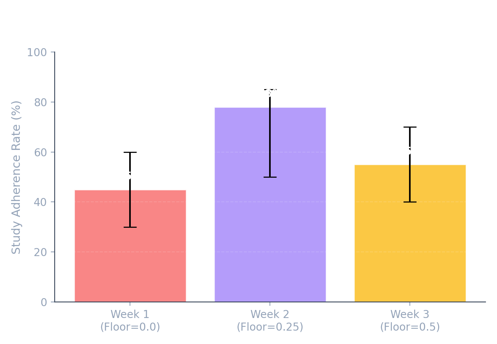
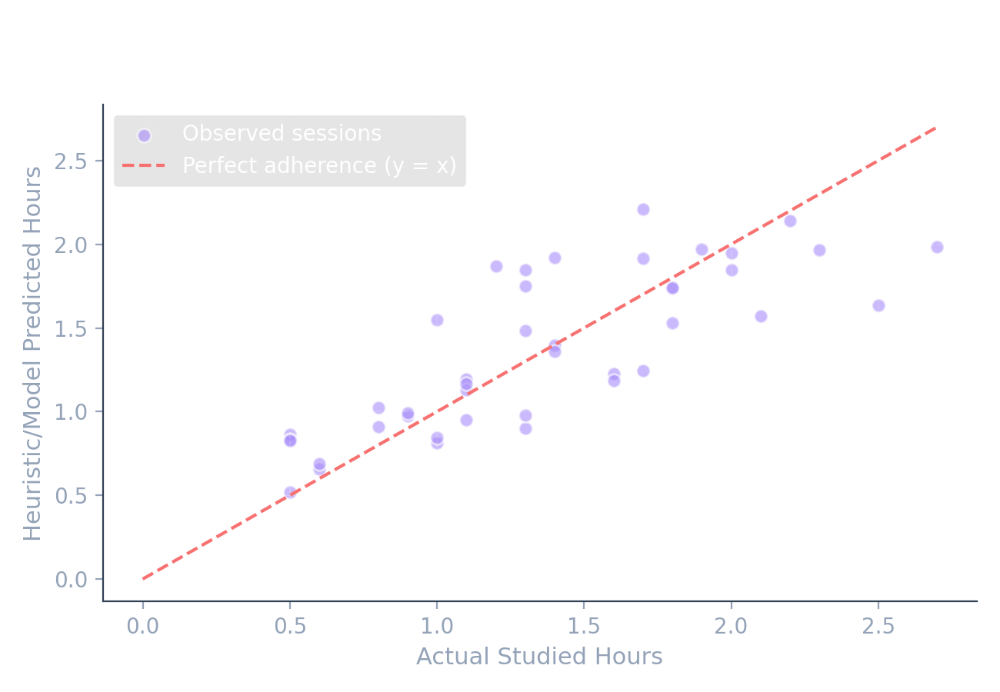

Learning Analytics & Heuristic Insights
Verify how the scheduler's weights correspond to your actual grade outputs and focus trends.
*Stats based on demo data. Real tracking starts when you log your first session.
Feedback Loop Calibration (Exponential Smoothing)
loading...
Exploratory Linear Regression (Adherence Predictor)
loading ML model parameters...
Prediceted vs Actual Study Hours
Study Duration vs Exam Marks Correlation
Daily Focus score trend
Study Allocation by Subject Type
Urgency Weight Floor Sweep (Sensitivity Sweep, n=1)

Exploratory Regression Fit (Predicted vs Actual)
